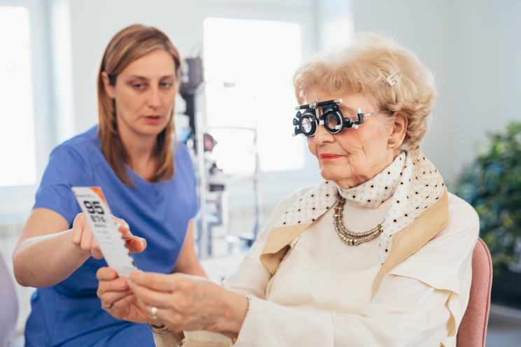

Una residente de una ciudad mexicana ayudó a su madre a recuperar la vista sin cirugía


La innovadora herramienta desarrollada por un profesor mexicano permite a miles de personas superar problemas de visión sin cirugía. Isabel Cano García, residente en Valencia, contó cómo fue posible restaurar la vista de su madre en el menor tiempo posible.
"Mi madre tiene 65 años. Hace cuatro años empezó a notar problemas de visión. Todo comenzó con una leve molestia en los ojos, después de lo cual mi madre comenzó a quejarse cada vez más de borrosidad y pérdida de enfoque. No lo ocultaré: comencé a preocuparme mucho por el hecho de que se enfrentaría a una pérdida total de visión y dejaría de ver las caras de sus queridos hijos y nietos. Durante mucho tiempo, la visión de mi madre era absolutamente inestable: después de mucha persuasión, ella aceptó hacer una cita con el médico. Esperábamos que el costo de la restauración de la visión fuera muy alto. Analizamos diferentes métodos de tratamiento y ahorramos dinero. En última instancia, no solo devolvimos la vista a mi madre sin cirugía, ¡sino que también ahorramos casi toda la cantidad diferida!”.
"No lo ocultaré: comencé a preocuparme mucho por el hecho de que se enfrentaría a una pérdida total de visión y dejaría de ver las caras de sus queridos hijos y nietos".
MÉTODO INNOVADOR PARA RESTAURAR LA VISIÓN
"Estaba sentada en el hospital esperando con mi madre el próximo examen para identificar el problema. Su médico se nos acercó y nos invitó a ir a su oficina.
Para ser honesto, en ese momento estaba segura de que escucharía predicciones decepcionantes. ¡Pero mis expectativas no se confirmaron!
El médico me resumió brevemente el supuesto diagnóstico y me dijo que la cirugía no era necesaria para mi madre. Me contó las historias de muchos de sus pacientes que lograron recuperar la vista utilizando una herramienta innovadora desarrollada por un profesor mexicano.
Reaccioné a sus palabras con escepticismo, ya que estaba convencida de que el deterioro de la visión en nuestro caso se debe a cambios relacionados con la edad. ¿Pueden algunas cápsulas curar una enfermedad de la edad que existe debido a la misma naturaleza ? El médico me convenció de que este producto fue concebido originalmente como un método de tratamiento de trastornos visuales para personas mayores de 40 años.
Permítanme decirles por qué decidimos elegir las cápsulas de . Es un producto natural desarrollado por un destacado profesor del Instituto Clínico Oftalmológico de Madrid. Al principio, el profesor probablemente no podía pensar cuán efectivo fue el remedio que creó. Decenas de ensayos clínicos exitosos y miles de clientes satisfechos: ahora es recomendado por médicos famosos y personas públicas.
Después de hablar con mi médico, leí una gran cantidad de comentarios positivos y, sin embargo, decidí pedir cápsulas. Pero decidí probar el producto no solo en mi madre, sino también en mí misma. No tengo problemas serios, pero trabajar en la computadora me ha obligado a usar gafas, que a menudo me cansan los ojos. Hice un pedido.
Después de 5 días, las cápsulas estaban en mis manos. Leí las instrucciones y comenzamos a tomarlas.
El paquete contiene cápsulas de dos colores diferentes. Tomamos 2 cápsulas (una de cada color) durante el día y 2 cápsulas (una de cada color) por la noche, junto con un poco de agua.
RESULTADOS
"Mi madre tomaba regularmente sin perder una sola cápsula. Durante toda su vida, su cuerpo dio reacciones negativas al uso de cualquier medicamento. No lo creerán, pero se convirtió casi en el único producto con el cual mamá no sintió un solo efecto secundario.
Después de 3 semanas de recepción, mi madre y yo fuimos a una prueba de visión. Decir que el resultado me sorprendió, es ¡no decir nada!
La visión de la madre se normalizó en un 65%. Esto sucedió en solo 21 días sin cirugía. Mi madre volvió a ver el mundo con un enfoque claro. En la cita con el médico, ella lloró de felicidad.
Mis resultados también fueron sorprendentes. ¡La visión mejoró de -3.00 a -1.25! ¿Se lo pueden imaginar? ¡En solo 21 días! Por recomendación del médico, decidimos continuar tomando las cápsulas, con el fin de consolidar el resultado obtenido. Inesperadamente, pero se convirtió en una salvación para dos miembros de la familia de diferentes edades.
Por supuesto, después de resultados tan sorprendentes, no pude evitar compartir mi experiencia con otros. Estoy segura de que muchos también sufren de discapacidad visual y esperan recuperarla sin grandes gastos e intervenciones quirúrgicas.
Por el momento, se puede pedir en el sitio web oficial. El precio definitivamente les sorprenderá: ¡es igual al costo de tres paquetes de lentes de contacto! De acuerdo, como regla general, restaurar la visión cuesta MUCHO más.
Realmente espero que mi historia ayude a sus lectores y puedan ver el mundo de una manera nueva. Si alguno de ustedes ya ha usado este producto, comparta su opinión en los comentarios a continuación.
Nuestra redacción decidió aprender más sobre este producto con un especialista líder en el campo de la Oftalmología. Esto es lo que resultó de esta entrevista.
La profesora Elena Gil Gómez es la oftalmóloga líder de la Organización Mundial de la Salud (OMS), que lucha contra la ceguera en todo el mundo.
- Dr. Gómez, díganos, ¿qué tan relevantes son los problemas de visión para la sociedad moderna?
En todo el mundo, alrededor de 2.200 millones de personas padecen algún tipo de discapacidad visual. Según la OMS, las principales son: anomalías refractivas no corregidas (miopía, hipermetropía o astigmatismo) - 43%, cataratas - 33%; glaucoma - 2%. Pero estamos completamente seguros de que el 80% de todos los casos de discapacidad visual se pueden prevenir o curar.
- – ¿Podría contarnos más sobre el método innovador para restaurar la visión: ?
– es un producto absolutamente natural, basado en extractos naturales. La fórmula ayuda a mantener el estado funcional del órgano visual y normalizar los procesos metabólicos en los tejidos del ojo en condiciones de mayor carga visual, con una exposición intensa a la luz y al aumento de la radiación UV, al usar lentes de contacto y espejuelos, para prevenir el desarrollo o la progresión de enfermedades como: neuritis (inflamación) del nervio óptico, cataratas, coriorretinitis (inflamación de la coroides del globo ocular), desprendimiento de retina, queratitis y conjuntivitis.
tiene un certificado de calidad y ha pasado una docena de ensayos clínicos que han afectado a toda la comunidad médica. Entre las claras ventajas del producto, destaco la ausencia de efectos secundarios y una composición increíble.
El extracto de corteza de pino proporciona apoyo para el flujo sanguíneo en los ojos y la presión intraocular, en enfermedades de la retina. El extracto de arándano tiene propiedades vaso-contenedoras y antibacterianas pronunciadas. Los arándanos no solo restauran los mecanismos de protección de los tejidos de la retina, sino que también promueven la regeneración de un pigmento sensible a la luz: la rodopsina.
El betacaroteno en la composición participa en los mecanismos de fotorrecepción del ojo y normaliza los procesos metabólicos en la córnea.
¡Definitivamente puedo recomendar este producto a cualquier persona que haya experimentado una discapacidad visual!
- ¡Gracias, Dr. Gómez! ¿Quiere desear algo a nuestros lectores?
- Sólo puedo desear una cosa. ¡Cuídense a sí mismos y a su vista! Cualquier problema se puede manejar, ¡solo necesita su propio deseo!
Pedro Delgado Rodríguez
Llevo unos 10 años usando gafas de forma permanente. Sin ellas, simplemente no veo nada. No tienen idea de lo aburrido que estoy... tal vez yo también debería probar y finalmente renunciar a las dioptrías.
Álvaro Ortiz Alonso
¿Todavía están pensando en comprar las cápsulas o no? Les aconsejo que no piensen durante mucho tiempo, ¡este es un producto muy genial! Gracias a él, recuperé la agudeza visual y volví a ver todo lo que me rodea.
Luis Santos Herrera
También pedí para mis padres. El producto fue traído en 4 días después del pedido. Mis padres comenzaron a beberlo recientemente, pero ya han notado cambios positivos.
Lola Nuñez Castro
Mi papá ha estado tomando durante 3 semanas, ¡los resultados son impactantes!!! Estoy tan feliz por él((
Adriana Alonso León
está en tendencia y en Alemania, mis amigos lo han tomado durante 6 meses. Estas cápsulas también son útiles para aquellos que se sientan detrás de un monitor.
Felipe Ramos
Solo gracias a comencé a ver muchas veces mejor. ¡Estas cápsulas fueron mi salvación!
Esteban Domínguez
¡Gracias por el artículo, es muy útil! Pedí el producto. Al final resultó que, ahora la demanda de este producto es muy alta! ¡Tengo suerte de haberlo pedido!
Hugo Gutiérrez
Mi esposa y yo decidimos tomar las cápsulas, para la prevención. Los dos tenemos una predisposición genética a la discapacidad visual después de los 50 años. Queríamos evitar riesgos.
Catalina Blanco
¿No entendí dónde puedo pedir el producto? No pude encontrarlo en las farmacias.…
Raúl Vega Gallegos
Es una pena que no existiera hace 10 años: (ya habría podido prevenir mis problemas ... Parecería que las cápsulas me dieron resultados geniales, pero soy consciente de que si comenzara a tomarlas antes, la visión se recuperaría por completo…
Alba Torres
Creo que me veo mucho más atractiva sin gafas. ¡Gracias !
Matías Alonso Martín
Chicos, tengo 48 años, ¿creen que no es demasiado tarde para tomar ?
Lucas Duran
Por supuesto, no es demasiado tarde, tengo 45 años y mis ojos comenzaron a ver muchas veces mejor en 3 meses.
Lucía Vázquez Fernández
¡Han pasado 2 meses desde el inicio de la recepción del producto y mi padre pudo ver claramente de nuevo! ¡Gracias a los fabricantes de este producto!
Carmen Flores Arriaga
El resultado es extraordinario, estoy feliz porque veo todo perfecto. ¡Me siento joven y saludable!
Sofía Cortés Muñoz
Wow, ¡excelente remedio!
Manuel Chávez
Logré ordenar con un descuento del -50%. Estoy esperando la entrega.
Joaquín Carrasco
He estado tomando estas cápsulas durante dos semanas, y ya puedo decir que no esperaba resultados similares tan rápido. ¡Es absolutamente INCREÍBLE!
Rafael Pena Ruíz
Sólo tenía que recuperar la vista para volver a sentirme feliz.
Sergio Cano Serrano
Lo pedí para mis padres, a un precio atractivo. Ahora ambos están en el curso, cada día se sienten mejor. Incluso dejaron de usar gafas en casa , ¡y esto ya es una gran mejora!
Alejandra García López
Solo para que lo sepan, no solo es adecuado para personas mayores de 40. Mi amigo de 27 años, recuperó su visión gracias a estas cápsulas.
Valentina Benitez
¡Ordenaré para mi esposo! He oído hablar de este producto más de una vez)
Agustin Barbero
Pedí porque la composición natural es muy importante para mí. La última vez, usando productos químicos, me encontré con una alergia severa…